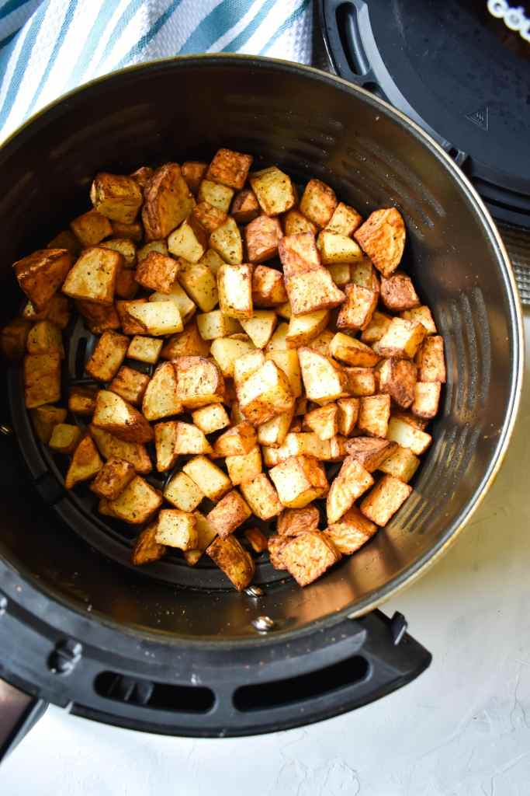

Air Fried Potatoes

Description
This recipe will show you how to make cripsy potato chunks in your air fryer
Ingredients
- 1 large Russet Potato
- Salt to taste
- Oregeno
- Rosemary
- 2 tbsp Olive Oil
Steps
- Preheat air fryer to 400 degrees for 5 minutes.
- Cut potato into small chunks and place in mixing bowl.
- Add salt and oilve oil to bowl and mix ingredients together.
- Once air fryer has finished preheating, add potatoes in the air fryer. Give the pot a shake so that the potatoes are evenly distributed in the bowl. Set time for 8 minutes and cook at 400 degrees.
- After 8 minutes, give the pot another shake to make sure that all areas of the potatoes are getting cripsy. Cook for another 8 minutes.
- After another 8 minutes, check to see if the potatoes have browned. Up to 5 minutes may be needed if the potato used was large.
- Remove the potatoes from the pot and add oregeno and rosemary to taste